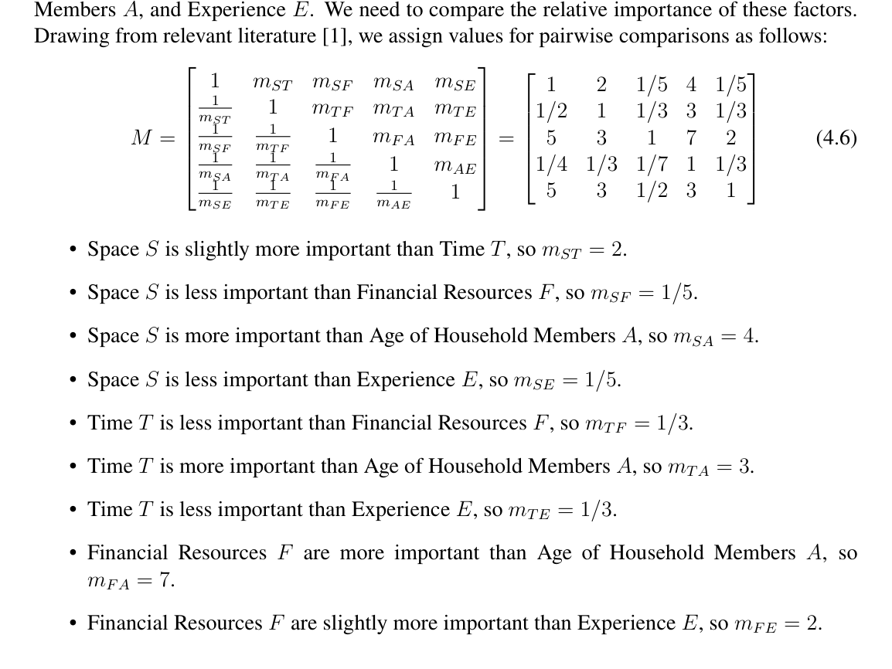

From last week's Team Papers

Maths Team · Mathematical Modelling · Session 3
Today's problem has no number in it at all. You have to decide what to measure.
Scroll down to begin
From last week's Team Papers
Cold start · no card, no hint
How can a student's body measurements tell him which sport suits him best?
Restate the problem in your own words. Then list what your team must decide before any number can appear. The Modeller writes.
This is how a competition begins: a question, your team, and nothing else.
Writers: what does "best" mean in your team's version?
The sport he would win at? Enjoy most? Be least likely to be hurt in? Each is a different problem. Choosing one, and writing it down, is the Analyse step.
One Form 2 student, three sports: basketball, gymnastics, distance running. Five measurements.
| His measurement | Lowest in his form | Highest in his form | |
|---|---|---|---|
| Height | 168 cm | 145 cm | 180 cm |
| Vertical jump | 38 cm | 20 cm | 55 cm |
| Reaction time | 0.24 s | 0.18 s | 0.35 s |
| Flexibility (sit and reach) | 30 cm | 5 cm | 40 cm |
| 1 km run | 5.0 min | 3.5 min | 7.0 min |
168 + 0.24 means nothing. How do you combine centimetres with seconds?
Thirty-five minutes, and I will not interrupt. The card gives the data and the rules. Finding a way to combine the measurements is your first job.
Decides what "best" means, and what the model leaves out.
Puts all five measurements on one scale, in a sheet.
Writes the reason for every weight. Brings me the three scores.
Tests the result: change one weight. Does the winner change?
Stuck after ten minutes of trying? The Writer may collect a hint card. Still no AI and no searching.
One student. The same five measurements.
Which team is right?
Each is right for its own weights. So the weights, and the reasons for them, are where a judge will look.
Today's Maths Tool · what you just built has a name
(value − lowest) ÷ (highest − lowest)
Height: (168 − 145) ÷ (180 − 145) = 0.66. Every measurement becomes a number from 0 to 1 with no units, so the five can be combined.
S = k₁x₁ + k₂x₂ + k₃x₃ + …
Each x is a score. Each k is a weight: how much that score matters for this sport. A weight is your judgement, so it needs a reason.
Which teams met the two traps? For some measurements, smaller is better. And for some sports, so is a smaller athlete.
The same student, with my weights. The number beside each measurement is his score out of 10, rounded to one decimal place.
Basketball wins by 0.1. Would you tell him to choose basketball?
Lower the weight of height for basketball. At what weight does the winner change?
Untick the box. Why is running suddenly last?
From today there is a Rubric: one page, six rows, no marks. Today you use two of them.
The problem is restated in the team's own words, and it says what "best" means.
Every assumption and every weight has a reason that someone who disagrees could accept.
Pass your working to the next team. Read theirs as a judge would. Using these two rows only, write one thing they did well and one question you would ask them.

Team 2024030, International Mathematical Modeling Challenge 2024: is a household ready to own a pet? Shown for study in class.
The pet paper again. Its readiness score is a weighted sum of five factors, like yours.
Find where the weights come from. Did the team simply choose five numbers?
They compare the factors two at a time, saying they draw on a published source, and every comparison is a sentence a reader can disagree with. On the next page the largest weight, 0.43 of the total, goes to money.
Now the Hall Problem. "The best way to dismiss the school" is unclear in the same way as "the best sport".
"By the best dismissal we mean … We measure it by … We give the most weight to … because …"
Writer types, the others say what to write: what "best" means for a dismissal, two or three things you will measure, and which matters most and why.
Fastest for the whole school? Shortest wait for the last class? Fewest people on a staircase at once? You choose, and you give the reason.
Exit slip. On the slip of paper: one thing that was unclear today, and one thing you liked. No name needed.
Finish this week's section of your Team Paper, then comment on another team's section, using the Rubric. The steps are on the reading version.
Session 4: how hot will Hong Kong's hottest day be in 2036? If you see a crowd at one of the hall's exits this week, count how many pass in a minute.